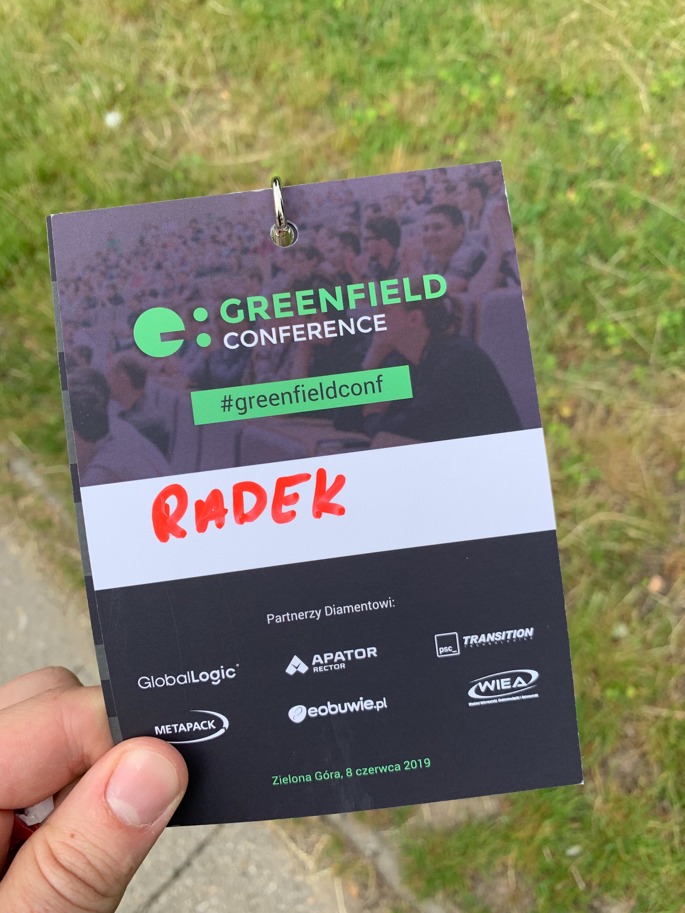
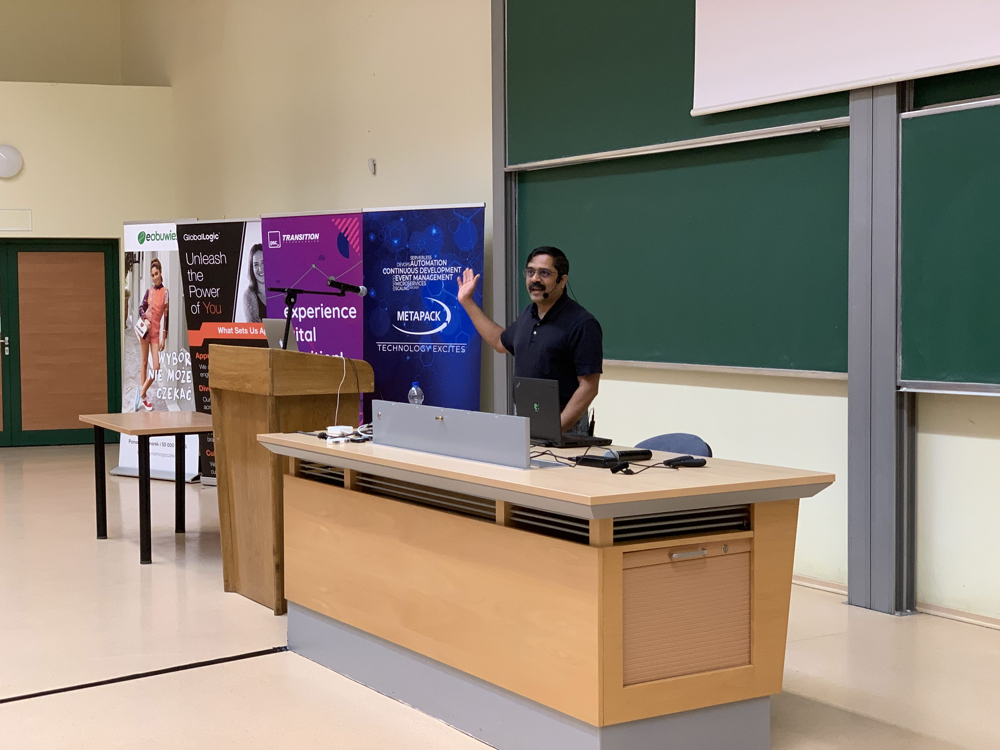
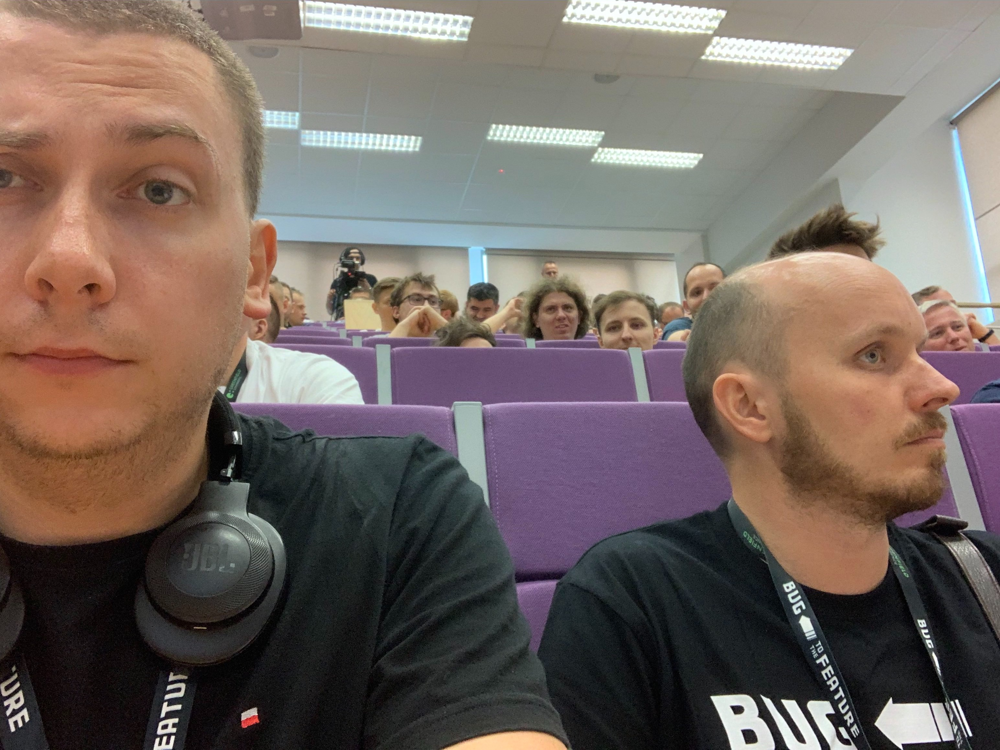
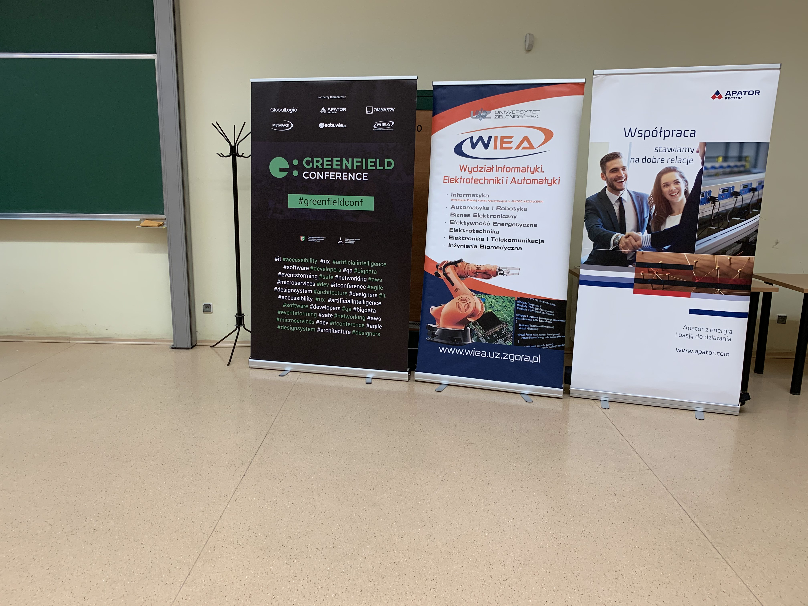

Greenfield Conference 2019 była drugą edycją tej konferencji, zorganizowaną przez zielonogórską społeczność IT. Odbyła się 8 czerwca 2019 roku w salach Wydziału Informatyki, Elektrotechniki i Automatyki.
Rejestracja zaczynała się od 7:45 i przebiegała bardzo sprawnie. Każdy uczestnik dostał identyfikator oraz torbę z pakietem startowym (koszulka plus dodatkowe fanty i zniżki od sponsorów). Catering był dobrej jakości i był na bieżąco uzupełniany. Minusem były bardzo wąskie korytarze i ludzie wręcz obijali się o siebie podchodząc po kawę czy herbatę. Widać to było szczególnie przy obiedzie, gdzie był problem ze znalezieniem skrawka miejsca, aby zjeść bez szturchania sąsiada.
Na dwóch piętrach były rozlokowane stoiska partnerów i sponsorów. Standardowo było można porozmawiać z przedstawicielami odnośnie charakterystyki pracy w danej firmie, przejrzeć oferty i zgarnąć kolejne gadżety jak powerbanki, termokubki, itp. Były też konkurencje i losowania nagród.
Konferencja zaczęła się od świetnej prelekcji wygłoszonej przez Venkata Subramaniama odnośnie nadmiernej złożoności w systemach, które rozwijamy. Pełna aula, dużo trafnych spostrzeżeń i analogii... szczególnie do małżeństwa. Bardzo dobre otwarcie.
Pierwsza prezentacja po podziale na ścieżki. Sama prelekcja nie była kompletnie związana z IT, mimo chwytliwego tytułu (buzzword Big Data). Autor prezentował jak w branży energetycznej, podczas cyfryzacji mierników zużycia prądu w domach, zaczęto zbierać gigantyczne ilości pomiarów, które w żaden sposób nie są analizowane ani nie mają specjalnej wartości z biznesowego punktu widzenia. Merytorycznie ciekawa prelekcja, ale trochę nietrafiona na ten typ konferencji.
Prezentacja Piotra Przybyła o czterech chorobach, z którymi pewnie większości zdarzyło się zmierzyć. Sporo przykładów i śmiechu. Skrócona wersja setnego spotkania Wrocław JUG.
and it was
Najbardziej techniczna prezentacja, na której byłem. Bardzo dużo fragmentów skryptów do Infrastructure as a Code (niestety nie pamiętam czy CloudFormation czy Terraform) i dużo diagramów przedstawiających kolejne architektury w chmurze Amazona. Miejscami było dużo chaosu i ciężko było nadążyć za tym co się dzieje na slajdach i diagramach. Temat ciekawy, aczkowiek bardziej nadający się na wpis na blogu firmowym niż na konferencję.
Dochodzimy do prawdopodobnie najlepszej prezentacji podczas tej konferencji. Pełna sala (ludzie siedzieli na schodach) i Jarek Pałka jak zawsze zrobił robotę. Po kilku pierwszych zdaniach widać, że autor ma olbrzymie doświadczenie w wystąpieniach. Dużo śmiechu (prelekcja czasami przypominała standup) oraz masa smutnych, ale jakże prawdziwych nawiązań do korpoświata. Niestety całość trwała tylko 45 minut, a mogłaby spokojnie drugie tyle i na pewno nie byłoby nudno. Zdecydowanie warto poświęcić te kilkadziesiąt minut i odsłuchać sobie na YouTubie.
Prezentacja, na którą osobiście najbardziej czekałem. Paweł Zubkiewicz pokazał w przystępny sposób ewolucję swojego rozwiązania serverless od pojedynczej lambdy poprzez stopniowe rozbijanie jej na bardziej atomowe funkcje. Pokazane zostały kolejne podejścia do architektury poprzez podpinanie triggerów pod serwisy AWS, aby na koniec wpiąć się w maszynę stanów Step Functions. Lekka prezentacja pokazująca jak składać z klocków AWS kompletny workflow.
Prelekcja nietechniczna o tzw. Impostor syndrome. Warto było przyjść posłuchać Michała Grucy, aby uświadomić sobie, jak często spotykamy takie postawy czy to u siebie czy wśród wspołpracowników. Autor pokazał też przykładowe sposoby radzenia sobie z niniejszym syndromem.
Na koniec konferencji, ponownie w auli, była prezentacja Iwony Kubowicz z programistka.com o wadach i zaletach przejścia na samozatrudnienie. Prelegentka opowiedziała o potencjalnych problemach i dylematach, z którymi spotka się każdy, kto decyduje się na odejście od bezpiecznej umowy o prace. Pokrótce zostały omówione kwestie urlopów, zwolnień lekarskich, jak działają wirtualne biura oraz jak współpracować z księgową. Lekka prezentacja po całym dniu na salach Uniwersytetu, przydatna każdemu kogo korci otworzenie własnej działalności i zmiana formy zatrudnienia.
Dobrze spędzony dzień w Zielonej Górze (blisko rodzinnych stron 😉 ). Konferencja ogólnie na plus, prelekcje na dobrym, a niektóre rewelacyjnym poziomie. Widać było, że organizatorzy się bardzo zaangażowali, aby jak najlepiej przygotować event. Niestety na after party nie moglem dotrzeć, ale Marek(@bendi007) mówi, że dało radę🙂
Dzięki WrocławskiJUG za wejściówkę!